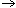

The eCos Configuration Tool contains several methods for accessing online help.
Most dialogs displayed by the eCos Configuration Tool are supplied with context-sensitive help. You can then get help relating to any control within the current dialog box by
A "What's This?" popup menu will be displayed. Click the menu to display a brief description of the function of the selected control.
A question mark cursor will be displayed. Click on any control to display a brief description of its function.
Some dialogs may have a Help button. You can press this to display a more general description of the function of the dialog box as a whole. This help will be in HTML form; for more information, see below.
In the Help menu, click eCos Configuration Tool Help (or press F1 ). A HTML page describing the general operation of the currently active window will be displayed. This help will normally be in HTML format; for more information, see " Methods of Displaying HTML Help ".
In the configuration window, right-click on a configuration item (or use Shift+F10 ). A context menu will be displayed; select Visit Documentation to display the page in the eCos documentation that most closely corresponds to the selected item.
By default, help in HTML form is displayed using an HTML Help viewer built in to the eCos Configuration Tool. This form of help will be familiar to Windows 98 or Windows 2000 users: it takes the form of a 3-pane floating window comprising Toolbar, Navigation and Topic windows. The Navigation Window provides access to Table of Contents (TOC), Index, and Search facilities. A toolbar is provided to allow quick access to related internet sites, including the Red Hat home page and net distribution sites.
If you wish, you may choose to have HTML Help displayed in a browser of your choice. To do this, select View  Settings and use the controls in the View Documentation group to select the replacement browser. Note that the Navigation facilities of the built-in HTML Help system will be unavailable if you choose this method of displaying help.
Getting Help | ||
|---|---|---|